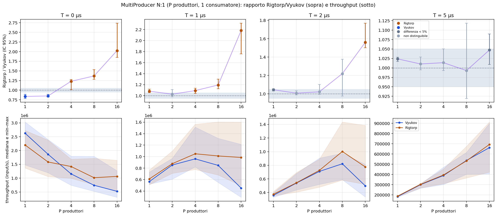
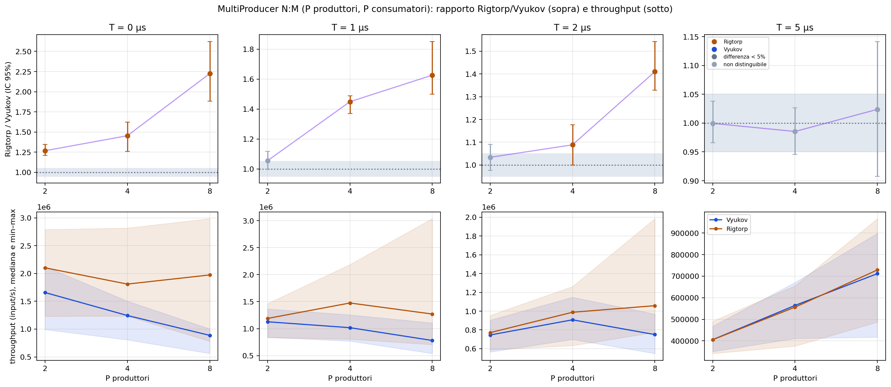
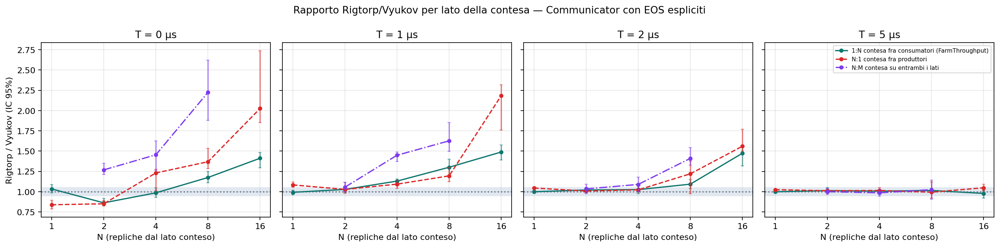
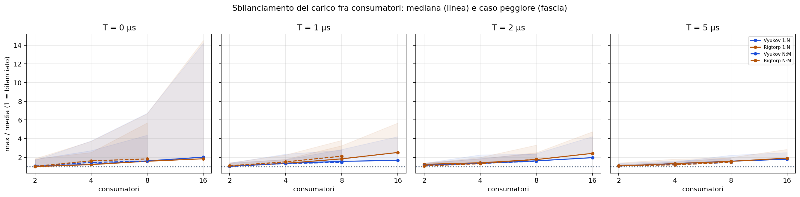

MoStream · Fase 0 · contesa fra produttori
Il benchmark MultiProducer: come è stato costruito, cosa ha misurato e cosa significa per la scelta fra CR-c e PW-c
In parole semplici
Immagina una cassetta delle lettere in cui tante persone vogliono imbucare la loro lettera nello stesso momento. Se le persone sono poche, va tutto liscio. Se sono tante, si spingono, si ostacolano e alla fine imbucano meno lettere di quante ne imbucherebbe una persona sola. È proprio quello che abbiamo visto: con 16 produttori sulla stessa coda, con la coda Vyukov, passano 5 volte meno messaggi che con un produttore solo.
La coda Rigtorp, che fa mettere tutti in fila con un numerino come dal panettiere, regge molto meglio: fino a 2,18 volte Vyukov con 16 produttori, e fino a 2,22 volte quando la ressa c'è sia per imbucare sia per ritirare. Ma anche Rigtorp perde metà della velocità. La soluzione vera è dare a ogni produttore la sua cassetta: è l'idea della PW-c.
Per la tesi
La campagna MultiProducer quantifica, per la prima volta in MoStream, il costo della contesa sul lato dei produttori. In una coda N:1, con Vyukov e T = 0, il throughput passa da 2,63 a 0,53 milioni di input/s aumentando i produttori da 1 a 16; con T = 1 µs sedici produttori ottengono un throughput inferiore a quello di un produttore solo (0,45 contro 0,56 milioni di input/s). Rigtorp attenua il fenomeno, con un rapporto Rigtorp/Vyukov fino a 2,18 in N:1 e 2,22 in N:M, contro un massimo di 1,49 nella configurazione 1:N. La contesa sul push risulta quindi più penalizzante di quella sul pop, e il suo costo non viene rimosso dallo schema CR-c. Questi risultati motivano lo schema PW-c, che elimina la contesa su entrambi i lati.
Per migliorare il Communicator sono stati proposti due schemi alternativi alla singola coda condivisa:
Le due soluzioni si comportano allo stesso modo quando c'è un solo produttore (1:1 e 1:N): in entrambe ogni consumatore ha una sua coda, con un solo produttore. Si distinguono solo quando i produttori sono più di uno. Lì la CR-c mantiene una coda contesa dai produttori, mentre la PW-c la elimina. Le campagne precedenti misuravano solo 1:1 (PipelineGrain) e 1:N (FarmThroughput), quindi non dicevano nulla sul caso decisivo. La Fase 0 serve a colmare questa lacuna.
In parole semplici
Abbiamo due idee per riorganizzare le cassette delle lettere. Le due idee danno lo stesso risultato quando chi imbuca è una persona sola. Per capire quale è meglio, dovevamo vedere cosa succede quando chi imbuca sono in tanti. Prima di questo test non l'avevamo mai misurato.
Per la tesi
Gli schemi CR-c e PW-c coincidono nelle topologie con un solo produttore e si differenziano esclusivamente in presenza di più produttori sullo stesso canale. La Fase 0 ha quindi lo scopo di misurare, con il Communicator attuale, il costo della contesa sul lato dei produttori nelle configurazioni N:1 e N:M, che le campagne precedenti non coprivano.
È stato scritto un benchmark nuovo, Benchmarks/MoStreamSynthetic/MultiProducer/nm.mojo, con una sola coda fra due stadi replicati:
Pipeline((parallel(NMSource, P), parallel(NMSink, C)))push nella coda.| N:1 | N:M | |
|---|---|---|
| Produttori e consumatori | P = 1, 2, 4, 8, 16 produttori, 1 consumatore | P = C = 2, 4, 8 |
| Chi fa il lavoro T | tutto il produttore | metà il produttore, metà il consumatore |
| Dove c'è contesa | sul push, fra i produttori | su push e pop |
Gli stessi delle campagne precedenti, per poterle confrontare: T = 0, 1, 2, 5 µs, 50.000 input, capacità 1024, 50 ripetizioni, pinning su core fisici distinti, seed 42. In ogni ripetizione si misurano entrambe le code, Vyukov e Rigtorp, in ordine casuale. In totale sono 3.200 misure.
Il lavoro T è un ciclo di calcolo calibrato. Si misura quanto dura un'iterazione (mediana di 5 calibrazioni) e si ricava quante iterazioni servono per ogni T. Questa volta il runner controlla la calibrazione: se si scosta di più del 5% dal valore atteso, la campagna non parte, perché vorrebbe dire che la CPU ha cambiato frequenza. Il valore misurato è 2,875 ns per iterazione, uguale a quello delle campagne precedenti.
In parole semplici
Abbiamo costruito un piccolo "gioco": alcuni thread producono numeri, li mettono nella coda, altri li prendono. Ogni numero deve arrivare una volta sola, e controlliamo che sia così. Abbiamo ripetuto ogni prova 50 volte con ciascuna delle due code, per essere sicuri che i risultati non siano un colpo di fortuna.
| Throughput | input elaborati al secondo: più è alto, meglio è. In tabella è la mediana delle 50 ripetizioni, in milioni. |
| R/V | throughput di Rigtorp diviso throughput di Vyukov. Sopra 1 vince Rigtorp: 2,00 vuol dire il doppio. Sotto 1 vince Vyukov. |
| IC 95% | l'intervallo in cui, con buona probabilità, sta il vero valore di R/V. Si calcola con il bootstrap appaiato: si rifanno 20.000 "campagne simulate" pescando a caso le ripetizioni, tenendo sempre insieme le due misure della stessa ripetizione. |
| Coppie vinte | in quante delle 50 ripetizioni Rigtorp è stata più veloce di Vyukov. |
| CV | coefficiente di variazione: quanto variano le misure di una coda, in percentuale. |
| Esito | se l'IC contiene 1, non distinguibile. Se lo esclude, vince la coda più veloce quando la differenza supera il 5%; altrimenti differenza < 5%. |
In parole semplici
R/V è come dire «quante volte Rigtorp è più veloce di Vyukov». L'intervallo di confidenza è come un margine di errore: se è tutto sopra 1, siamo sicuri che Rigtorp è più veloce; se tocca 1, non possiamo dirlo.
Esiti: Rigtorp: 8, Vyukov: 2, differenza < 5%: 3, non distinguibile: 7.
| P | T µs | Vyukov (M input/s) | Rigtorp (M input/s) | R/V | IC 95% | coppie vinte da Rigtorp | CV V / R | esito |
|---|---|---|---|---|---|---|---|---|
| 1 | 0 | 2,63 | 2,20 | 0,84 | 0,79–0,89 | 9/50 | 15% / 14% | Vyukov |
| 1 | 1 | 0,56 | 0,61 | 1,08 | 1,05–1,12 | 45/50 | 6% / 6% | Rigtorp |
| 1 | 2 | 0,36 | 0,37 | 1,04 | 1,03–1,05 | 41/50 | 3% / 4% | differenza < 5% |
| 1 | 5 | 0,18 | 0,19 | 1,02 | 1,02–1,03 | 49/50 | 1% / 1% | differenza < 5% |
| 2 | 0 | 1,86 | 1,58 | 0,85 | 0,82–0,89 | 15/50 | 17% / 16% | Vyukov |
| 2 | 1 | 0,85 | 0,88 | 1,03 | 0,98–1,11 | 29/50 | 12% / 10% | non distinguibile |
| 2 | 2 | 0,54 | 0,54 | 1,01 | 0,99–1,03 | 29/50 | 8% / 9% | non distinguibile |
| 2 | 5 | 0,30 | 0,30 | 1,01 | 1,00–1,03 | 33/50 | 3% / 4% | non distinguibile |
| 4 | 0 | 1,16 | 1,42 | 1,23 | 1,01–1,28 | 28/50 | 21% / 17% | Rigtorp |
| 4 | 1 | 0,96 | 1,05 | 1,09 | 1,04–1,13 | 33/50 | 16% / 18% | Rigtorp |
| 4 | 2 | 0,71 | 0,72 | 1,02 | 0,99–1,10 | 32/50 | 12% / 12% | non distinguibile |
| 4 | 5 | 0,39 | 0,39 | 1,01 | 0,99–1,05 | 26/50 | 9% / 8% | non distinguibile |
| 8 | 0 | 0,74 | 1,02 | 1,37 | 1,28–1,53 | 42/50 | 34% / 25% | Rigtorp |
| 8 | 1 | 0,85 | 1,01 | 1,19 | 1,12–1,30 | 38/50 | 21% / 19% | Rigtorp |
| 8 | 2 | 0,82 | 1,00 | 1,22 | 0,98–1,38 | 33/50 | 14% / 19% | non distinguibile |
| 8 | 5 | 0,54 | 0,53 | 0,99 | 0,92–1,12 | 28/50 | 12% / 12% | non distinguibile |
| 16 | 0 | 0,53 | 1,06 | 2,03 | 1,85–2,74 | 44/50 | 36% / 28% | Rigtorp |
| 16 | 1 | 0,45 | 0,99 | 2,18 | 1,76–2,32 | 45/50 | 40% / 30% | Rigtorp |
| 16 | 2 | 0,50 | 0,78 | 1,56 | 1,50–1,77 | 48/50 | 20% / 24% | Rigtorp |
| 16 | 5 | 0,66 | 0,69 | 1,05 | 1,01–1,09 | 29/50 | 16% / 19% | differenza < 5% |
Throughput mediano in milioni di input/s su 50 ripetizioni. In arancione vince Rigtorp, in blu vince Vyukov.

In parole semplici
Più persone mettiamo a imbucare nella stessa cassetta, più si pestano i piedi. Con Vyukov, quando sono 16, entrano 5 volte meno lettere di quando c'era una persona sola. Con Rigtorp, dove si prende il numerino, va molto meglio: circa il doppio di Vyukov. Ma neanche il numerino fa miracoli: si perde comunque metà della velocità.
Per la tesi
Nella configurazione N:1 il throughput diminuisce all'aumentare del numero di produttori, a causa della contesa sul contatore di inserimento della coda. Con Vyukov, per T = 0, il throughput si riduce di un fattore 5,0 fra 1 e 16 produttori, e per T = 1 µs sedici produttori ottengono un throughput inferiore a quello di un singolo produttore. La prenotazione tramite fetch_add di Rigtorp, che non richiede ritentativi, attenua il fenomeno (rapporto Rigtorp/Vyukov fino a 2,18 con intervallo di confidenza interamente sopra la parità), senza eliminarlo.
Esiti: Rigtorp: 7, non distinguibile: 5.
| P = C | T µs | Vyukov (M input/s) | Rigtorp (M input/s) | R/V | IC 95% | coppie vinte da Rigtorp | CV V / R | esito |
|---|---|---|---|---|---|---|---|---|
| 2 | 0 | 1,66 | 2,10 | 1,27 | 1,21–1,35 | 40/50 | 16% / 20% | Rigtorp |
| 2 | 1 | 1,13 | 1,19 | 1,05 | 1,00–1,12 | 32/50 | 11% / 12% | non distinguibile |
| 2 | 2 | 0,75 | 0,77 | 1,03 | 0,98–1,09 | 28/50 | 9% / 10% | non distinguibile |
| 2 | 5 | 0,41 | 0,41 | 1,00 | 0,97–1,04 | 26/50 | 6% / 7% | non distinguibile |
| 4 | 0 | 1,24 | 1,81 | 1,45 | 1,26–1,62 | 48/50 | 12% / 23% | Rigtorp |
| 4 | 1 | 1,02 | 1,48 | 1,45 | 1,37–1,49 | 46/50 | 12% / 17% | Rigtorp |
| 4 | 2 | 0,91 | 0,99 | 1,09 | 1,00–1,18 | 31/50 | 12% / 16% | Rigtorp |
| 4 | 5 | 0,56 | 0,56 | 0,99 | 0,95–1,03 | 20/50 | 9% / 11% | non distinguibile |
| 8 | 0 | 0,89 | 1,97 | 2,22 | 1,88–2,62 | 49/50 | 15% / 31% | Rigtorp |
| 8 | 1 | 0,78 | 1,27 | 1,63 | 1,50–1,85 | 47/50 | 16% / 34% | Rigtorp |
| 8 | 2 | 0,75 | 1,06 | 1,41 | 1,33–1,54 | 45/50 | 13% / 24% | Rigtorp |
| 8 | 5 | 0,71 | 0,73 | 1,02 | 0,91–1,14 | 29/50 | 18% / 15% | non distinguibile |
Throughput mediano in milioni di input/s. Il lavoro T è diviso a metà fra produttore e consumatore.

In parole semplici
Qui la ressa c'è da tutte e due le parti: tanti imbucano e tanti ritirano dalla stessa cassetta. Con Vyukov, mettere più persone peggiora le cose. Con Rigtorp va più del doppio meglio. Ma l'idea migliore resta non avere un'unica cassetta per tutti.
Per la tesi
Nella configurazione N:M la contesa agisce su entrambi i contatori della coda e i due effetti si sommano: il rapporto Rigtorp/Vyukov raggiunge 2,22 con otto produttori e otto consumatori, e il throughput di Vyukov diminuisce all'aumentare del numero di thread. Il fenomeno scompare per un lavoro di 5 µs per input, quando la frequenza degli accessi alla coda si riduce.

| Topologia | Dove c'è contesa | R/V massimo |
|---|---|---|
| 1:N (FarmThroughput) | fra consumatori, sul pop | 1,49 |
| N:1 | fra produttori, sul push | 2,18 |
| N:M | su entrambi i lati | 2,22 (già con 8 + 8) |
push costa più di quella sul pop: con 16 repliche e T = 1 µs, R/V vale 2,18 in N:1 contro 1,49 in 1:N.In parole semplici
Abbiamo scoperto che è peggio avere tanta gente che imbuca che tanta gente che ritira. E se ci sono tutte e due le cose insieme, è peggio ancora.
Per la tesi
Il confronto fra le tre topologie mostra che la contesa sul lato dei produttori è più penalizzante di quella sul lato dei consumatori, e che la presenza di contesa su entrambi i lati ne amplifica gli effetti. Ne consegue che una riorganizzazione del Communicator limitata al lato dei consumatori non affronterebbe la principale fonte di degrado misurata.
Con più consumatori si è misurato anche come gli input si distribuiscono fra di loro. Per ogni esecuzione si calcolano:
Per ogni configurazione si riporta la mediana sulle 50 ripetizioni e il caso peggiore.
| consumatori | T µs | Vyukov | Rigtorp | ||||
|---|---|---|---|---|---|---|---|
| max/media mediana | max/media peggiore | min/media mediana | max/media mediana | max/media peggiore | min/media mediana | ||
| 2 | 0 | 1,07 | 1,78 | 0,93 | 1,04 | 1,82 | 0,96 |
| 2 | 1 | 1,03 | 1,39 | 0,97 | 1,10 | 1,42 | 0,90 |
| 2 | 2 | 1,11 | 1,38 | 0,89 | 1,08 | 1,38 | 0,92 |
| 2 | 5 | 1,10 | 1,36 | 0,90 | 1,11 | 1,41 | 0,89 |
| 4 | 0 | 1,46 | 2,72 | 0,58 | 1,63 | 2,53 | 0,43 |
| 4 | 1 | 1,34 | 2,35 | 0,67 | 1,52 | 2,26 | 0,56 |
| 4 | 2 | 1,35 | 2,27 | 0,76 | 1,32 | 1,99 | 0,76 |
| 4 | 5 | 1,22 | 1,63 | 0,86 | 1,19 | 1,82 | 0,84 |
| 8 | 0 | 1,60 | 4,38 | 0,61 | 1,83 | 5,69 | 0,12 |
| 8 | 1 | 1,46 | 2,77 | 0,67 | 2,13 | 3,83 | 0,12 |
| 8 | 2 | 1,59 | 2,36 | 0,64 | 1,80 | 3,32 | 0,37 |
| 8 | 5 | 1,46 | 1,87 | 0,67 | 1,48 | 1,96 | 0,68 |
| consumatori | T µs | Vyukov | Rigtorp | ||||
|---|---|---|---|---|---|---|---|
| max/media mediana | max/media peggiore | min/media mediana | max/media mediana | max/media peggiore | min/media mediana | ||
| 2 | 0 | 1,04 | 1,68 | 0,96 | 1,02 | 1,86 | 0,98 |
| 2 | 1 | 1,04 | 1,42 | 0,96 | 1,04 | 1,36 | 0,96 |
| 2 | 2 | 1,16 | 1,33 | 0,84 | 1,26 | 1,39 | 0,74 |
| 2 | 5 | 1,07 | 1,21 | 0,93 | 1,08 | 1,20 | 0,92 |
| 4 | 0 | 1,26 | 3,76 | 0,49 | 1,22 | 3,72 | 0,53 |
| 4 | 1 | 1,37 | 1,76 | 0,69 | 1,36 | 1,80 | 0,68 |
| 4 | 2 | 1,36 | 1,89 | 0,72 | 1,42 | 1,84 | 0,67 |
| 4 | 5 | 1,34 | 1,53 | 0,79 | 1,33 | 1,48 | 0,79 |
| 8 | 0 | 1,62 | 6,72 | 0,45 | 1,58 | 6,68 | 0,51 |
| 8 | 1 | 1,57 | 2,85 | 0,50 | 1,84 | 3,26 | 0,27 |
| 8 | 2 | 1,63 | 2,41 | 0,59 | 1,76 | 2,51 | 0,51 |
| 8 | 5 | 1,59 | 2,23 | 0,68 | 1,57 | 1,98 | 0,70 |
| 16 | 0 | 2,02 | 14,20 | 0,33 | 1,85 | 14,51 | 0,08 |
| 16 | 1 | 1,69 | 4,22 | 0,31 | 2,52 | 5,68 | 0,02 |
| 16 | 2 | 1,97 | 4,22 | 0,30 | 2,43 | 4,74 | 0,00 |
| 16 | 5 | 1,80 | 2,52 | 0,45 | 1,92 | 2,86 | 0,44 |

In parole semplici
Con un'unica cassetta, chi arriva prima prende più lettere. Alcuni lavorano tanto e altri quasi niente. Non sappiamo ancora se questo rallenti il lavoro: con un'unica cassetta, se chi ritira è già abbastanza veloce, può anche non contare. Con cassette separate, invece, le lettere andranno distribuite bene, altrimenti uno resta sommerso e gli altri stanno fermi.
Per la tesi
Anche con la coda condivisa la distribuzione degli input fra i consumatori risulta disomogenea, con rapporti max/media in mediana fino a 2,52. Poiché in una coda condivisa l'assegnazione è guidata dalla disponibilità dei consumatori, tale disomogeneità non implica di per sé una perdita di throughput. Nello schema PW-c, in cui l'assegnazione è decisa dal produttore, la politica di bilanciamento diventa invece determinante: il valore misurato costituisce il termine di confronto per valutarla.
| Topologia | CR-c (M code MPSC) | PW-c (N × M code SPSC) |
|---|---|---|
| N:1, il caso peggiore misurato | Non cambia nulla: resta una sola coda contesa da tutti i produttori | Elimina la contesa: N code 1:1, che il consumatore scorre |
| N:M | Divide la contesa dei produttori su M code | Elimina la contesa su entrambi i lati |
| 1:N | Elimina la contesa fra consumatori | Elimina la contesa fra consumatori |
In parole semplici
La prima idea (CR-c) dà una cassetta a ogni persona che ritira, ma chi imbuca continua a spingersi davanti alla stessa cassetta. La seconda idea (PW-c) dà una cassetta a ogni coppia "chi imbuca, chi ritira": nessuno si spinge più. Siccome abbiamo scoperto che il problema più grande è proprio la ressa di chi imbuca, la seconda idea è quella giusta.
Per la tesi
I risultati della Fase 0 indicano lo schema PW-c come direzione preferibile. La principale fonte di degrado misurata, la contesa sul lato dei produttori in configurazione N:1, non è affrontata dallo schema CR-c, che mantiene una coda MPSC condivisa per ciascun consumatore, mentre è eliminata dallo schema PW-c. Il throughput ottenibile da un singolo consumatore senza contesa (2,63 milioni di input/s) fornisce una stima del margine di miglioramento rispetto ai valori attuali con sedici produttori (0,53 e 1,06 milioni di input/s con Vyukov e Rigtorp), al netto del costo di polling sulle code di ingresso.
Communicator PW-c, con indice della replica, scelta della coda da parte del produttore, polling del consumatore ed EOS per coda.| Benchmark | Benchmarks/MoStreamSynthetic/MultiProducer/nm.mojo, run.py |
| Campagna | Benchmarks/MoStreamSynthetic/campagna-50-multiproducer-20261110/ (raw.csv, summary.csv, metadata.json) |
| Riferimento 1:N | Benchmarks/MoStreamSynthetic/campagna-50-explicit-eos-20261106/FarmThroughput/ |
| Analisi | Benchmarks/MoStreamSynthetic/analizza_multiproducer.py → analisi/ (ANALISI.md, valutazione.csv, sbilanciamento.csv, grafici) |
| Questa relazione | docs/Relazione_Fase0_MultiProducer/genera_relazione.py: legge tutti i numeri dai CSV |